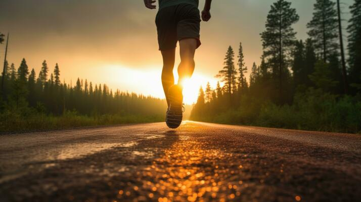

Running
Running enhances football skills by boosting stamina, speed, and agility, allowing players to perform consistently throughout a match. It sharpens explosive power for quick sprints and improves balance and coordination for better control on the field. Regular running also helps players adapt to sudden changes in direction and pace during gameplay.